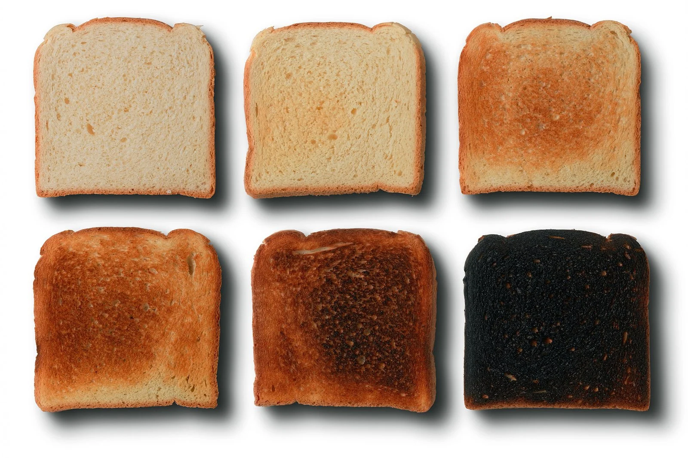

Toast!
Home

Description
Who doesn't love bread? Why not make it better? Toast that sucker up for maximum crunchiness and spread your favorite... spread... on the bread!
Ingredients
- Bread (any kind will do)
- Toaster (this can be substituted with a toaster oven, stove top and a pan, or even an oven)
- Something viscous and delicious! Anything from butter to smashed up avocado to nutella is welcome!
Directions (Step-by-step)
- Grab that bread!
- Toast it up to your desired level of crunch!
- Spread the tasty all over your flavor vehicle!